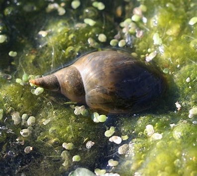
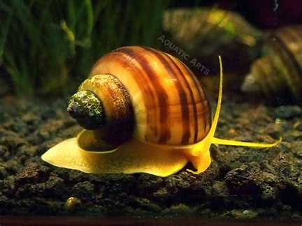
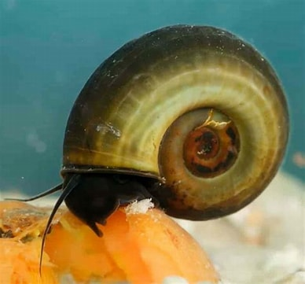

| Pond Snails | Appearance: Pond snails come in a variety of species, but they generally have elongated or conical shells. The shells can vary in color, ranging from brown and gray to shades of green. Some species may have patterns or bands on their shells. Habitat: As the name suggests, pond snails primarily inhabit freshwater environments such as ponds, lakes, and streams. They are well adapted to both stagnant and flowing water conditions and can tolerate a wide range of water parameters. Feeding Behavior: Pond snails are mainly herbivorous, feeding on algae and plant matter. They scrape off algae from various surfaces, helping to control its growth. They are considered beneficial in maintaining a balanced ecosystem by consuming excess algae |
 |
| Mystery Snails | Appearance: Mystery snails have a distinctive appearance with a rounded and smooth shell. The shell coloration can vary widely, including shades of gold, blue, brown, and ivory. The snails themselves have a soft body with a pair of tentacles, including a longer pair with eyes at the tips. Habitat: Mystery snails are native to rivers, ponds, and other freshwater habitats in South America. In aquariums, they require clean freshwater with stable water parameters, including temperature, pH, and hardness. Behavior: Mystery snails are known for their interesting and beneficial behaviors. They are known as "apple snails" due to their habit of surfacing to breathe air, using a specialized lung-like structure called a "pallial cavity." Mystery snails are also proficient algae grazers and can help control excessive algae growth in aquariums. Feeding: Mystery snails are primarily herbivorous. They will graze on algae growing on tank surfaces, plant matter, and decaying organic material. It's important to provide a varied diet to ensure their nutritional needs are met. Blanched vegetables like zucchini, spinach, or lettuce can be offered as additional food sources |
 |
| Ramshorn Snails | Appearance: Ramshorn snails are named for the shape of their shells, which resemble a ram's horn or coil. Their shells are typically flat and disk-shaped with a spiraling pattern. The coloration of the shells can vary, ranging from light brown to dark brown, depending on the species and individual variation. Habitat: Ramshorn snails are widely distributed across the world and can be found in freshwater environments such as ponds, lakes, slow-moving rivers, and marshes. They are adaptable and can survive in a range of water conditions, including both clean and polluted water bodies. Feeding Behavior: Ramshorn snails are herbivorous, feeding on algae and decaying plant matter. They use a rasping radula, a specialized feeding organ, to scrape food particles from various surfaces. |
 |